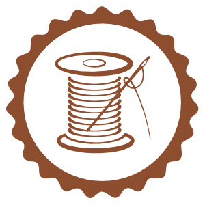
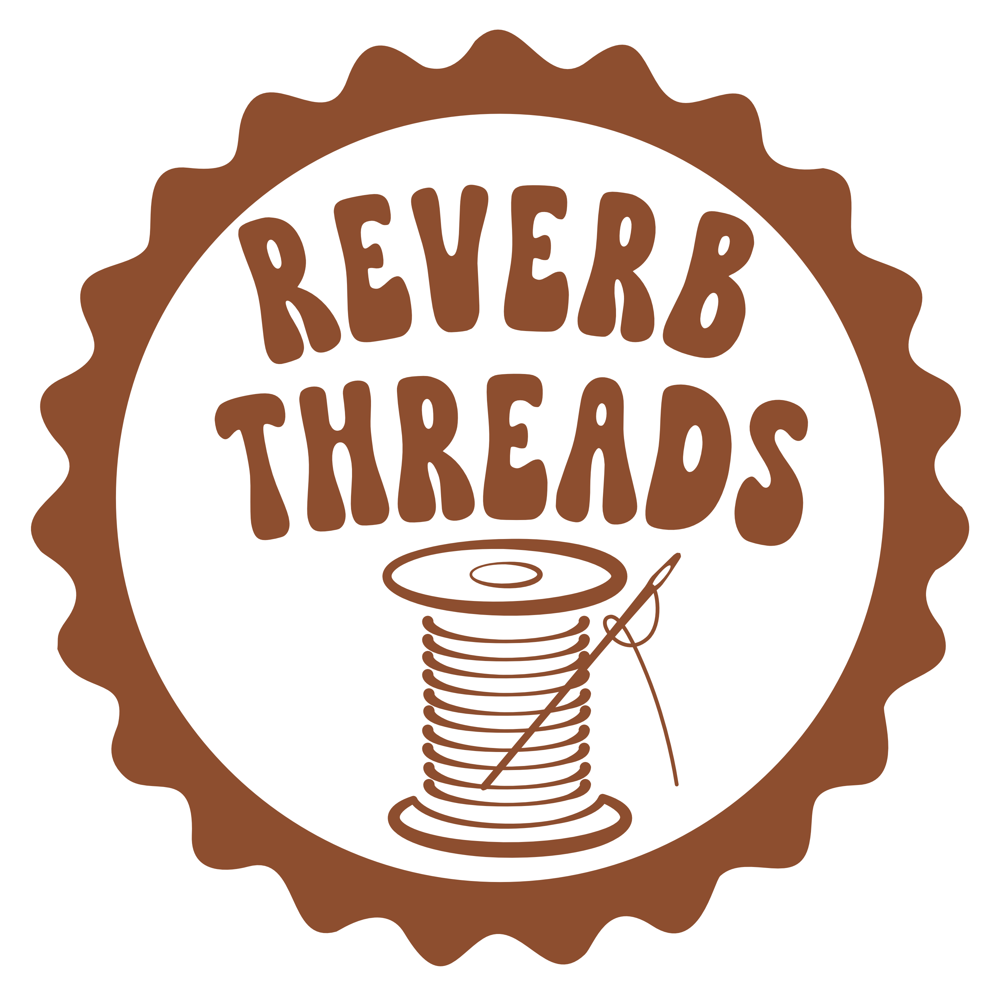

Jedna ihla, jeden stroj, nekonečno možností.
Mojou ideou je nielen tvoriť jedinečné kúsky ale dať život materiálu ktorý by inak skončil na zabudnutý.
Okrem šetrenia životného prostredia je prínosom aj vintage estetika a farebná smršť ktorá vznikne kombináciou rôznych vzorov a textúr.

Detail prvej upcyklovanej bundy.
Naše srdce: Singer 4432.
Láska ku kreativite cítim v každej oblasti svojho života a práve ona ma priviedla k šitiu.
Všetko to začalo s malým ručným šijacím strojom ktorý nevedel poriadne ani udržať látku pokope a setom vyšívacích ihiel. Tieto jednoduché nástroje mi ukázali že každý kus látky má potenciál stať sa niečím novým a jedinečným. Dnes tvorím na spoľahlivom Singer 4432 ktorý zvládne aj priadne materiály a dokáže vytvoriť spoľahlivé každodenné a najmä jedinečné kúsky pre každého.